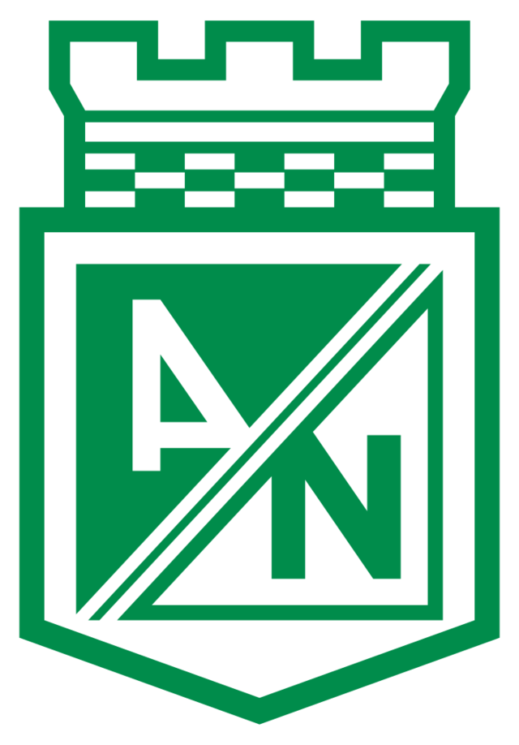

Nacional
Atlético Nacionalcerró el 2021 con la alegría de ganar la Copa BetPlay y de paso clasificar a la Copa Libertadores 2022, pero también con el fracaso resonante en la Liga, donde quedó eliminado prematuramente en los Cuadrangulares semifinales.Mientras se alista para disputar los cuadrangulares semifinales de la Liga, este es su palmarés a nivel nacional e internacional., con un total de 30 títulos. Títulos de liga: 1954, 1973, 1976, 1981, 1991, 1994, 1999, 2005, 2007 l y ll, 2011, 2013 l y ll, 2014, 2015 y 2017. Copa Colombia: 2012, 2013, 2016 y 2018, 2021.
